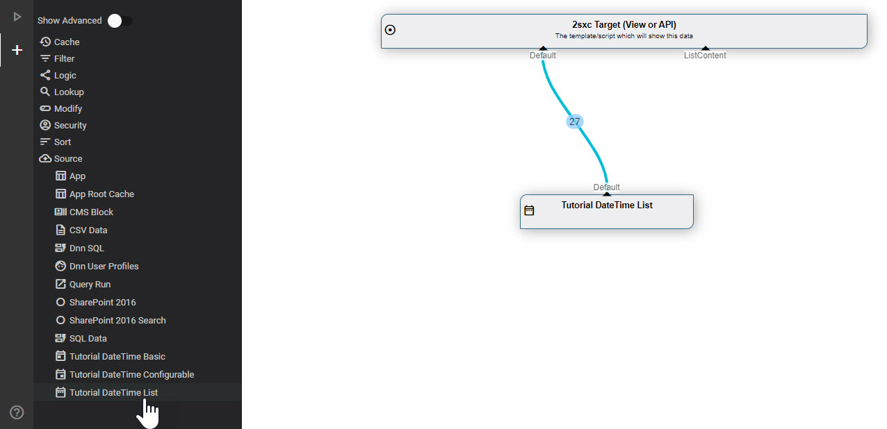
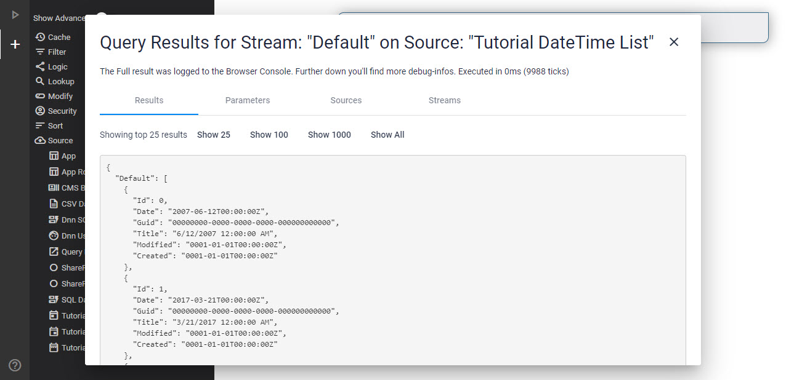

Warning
These documentations are for versions before 15.x. They don't apply to v15+ but are kept for reference. We highly recommend that you don't use them.
Tip
The code samples shown here are obsolete. But the code was updated to the latest version. So best get the real code from the DataSource Tutorial Repo
Tutorial Custom DataSources - BasicList
This explains the BasicList DataSource in the DataSource Tutorial.
Add to VisualQuery
This is what it looks like in VisualQuery:
And this is what you see when you run it:
Source of the BasicList DataSource
This is the code for the simplest DataSource:
using System;
using System.Collections.Generic;
using System.Collections.Immutable;
using ToSic.Eav.Data;
using ToSic.Eav.DataSources;
using ToSic.Eav.DataSources.Queries;
namespace ToSic.Tutorial.DataSource.Basic
{
// additional info so the VisualQuery can provide the correct buttons and infos
[VisualQuery(
NiceName = "Demo DateTime List",
Icon = "date_range",
NameId = "10ebb0af-4b4e-44cb-81e3-68c3b0bb388d" // random & unique Guid
)]
public class DateTimeDataSourceBasicList: ExternalData
{
public const string DateFieldName = "Date";
public const string IdField = "Id";
public const int ItemsToGenerate = 27;
/// <summary>
/// Constructor to tell the system what out-streams we have
/// </summary>
public DateTimeDataSourceBasicList()
{
Provide(GetList); // default out, if accessed, will deliver GetList
}
/// <summary>
/// Get-List method, which will load/build the items once requested
/// Note that the setup is lazy-loading,
/// ...so this code will not execute unless it's really used
/// </summary>
/// <returns></returns>
private ImmutableArray<IEntity> GetList()
{
var randomNumbers = new List<IEntity>();
for (var i = 0; i < ItemsToGenerate; i++)
{
var values = new Dictionary<string, object>
{
{IdField, i},
{DateFieldName, RandomDay()}
};
var ent = DataBuilder.Entity(values, id: i, titleField: DateFieldName);
randomNumbers.Add(ent);
}
return randomNumbers.ToImmutableArray();
}
// helper to randomly generate dates
private readonly Random _randomizer = new Random();
private readonly DateTime _start = new DateTime(1995, 1, 1);
private DateTime RandomDay()
{
var range = (DateTime.Today - _start).Days;
return _start.AddDays(_randomizer.Next(range));
}
}
}
This is very similar to the Basic case, just that we're now creating a list of Entities and returning them.
What this does is...
- Inform VisualQuery that there is a DataSource and registers it with a unique GUID
- The constructor says it provides one
Defaultstream which can be built byGetList() GetList()will simply create a simple entity and return it as a list
Read More
- Discover the Basic DataSourceTutorial with more examples
History
- Created 2017 for 2sxc 7
- Completely rebuilt for 2sxc 11.13 and VisualQuery 3